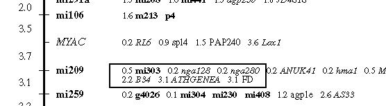

|  |
|
2d. Relative distances are always given from the nearest framework marker Marker positions are always shown to be relative to the nearest marker on the backbone. For example, in the image above, marker B34 is 2.2cM away from mi209. The markers nga128 and nga280 are 0.2cM away from mi209, and NOT 0.2cM away from mi303. Marker ATHGENEA is shown to be 3.1cM from mi209, which should mean they map to the same position. However, mapmaker has not placed them in the same place. We assume this is due to rounding errors in calculating the relative map positions. |